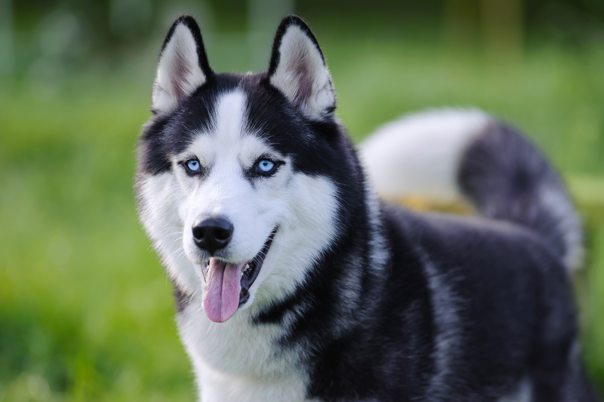
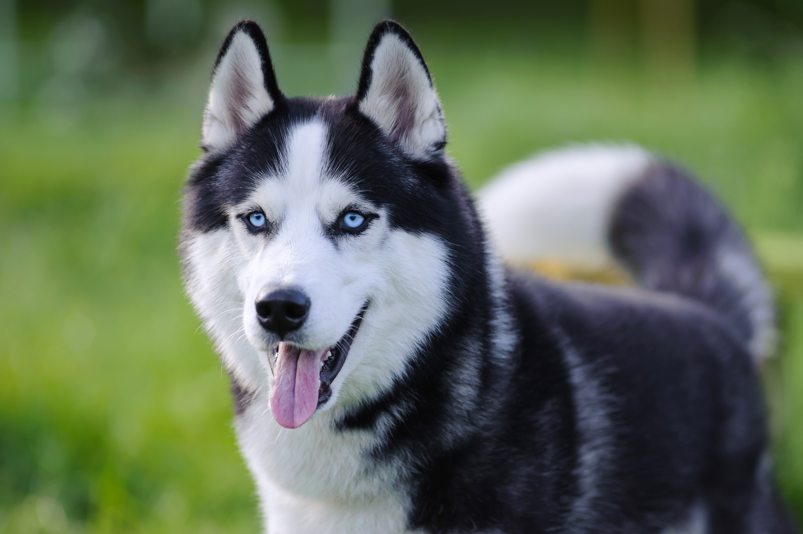

ჰასკის მახასიათებლები
ჰასკი ცნობილია თავისი ულამაზესი თვალებით და გამძლეობით ცივ კლიმატში.
დამატებითი ინფორმაცია
- წონა: 20-27 კგ
- საშუალო ასაკი: 13 წელი
- მშობლიური ქვეყანა: სიბერია
ჰასკი ცნობილია თავისი ულამაზესი თვალებით და გამძლეობით ცივ კლიმატში.
